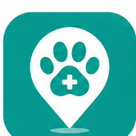
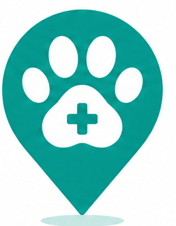

Horizontal · desktop navigation

App icon

Icon-only · constrained space
Cuidado que chega até você.
Source of truth — never recreate or recolor the mark. Keep clear space ≈ the height of the pin on all sides.
Pet
is teal,
Nalia
is slate ink.